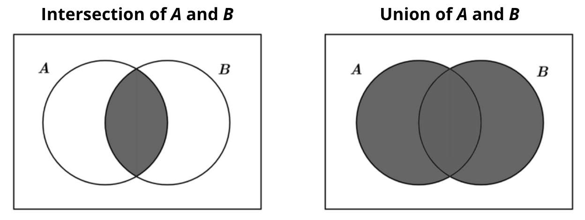

DevCafe Weekly
Nova funcionalidade adicionada aos Sets de Javascript
Recentemente, o Javascript introduziu novos métodos para objetos do tipo Set (Mursal, 2024). Estes novos métodos poderão substituir algumas bibliotecas anteriormente utilizadas para o mesmo propósito. Esta evolução é vantajosa, pois além de reduzir a dependência de bibliotecas de terceiros, estas novas funcionalidades são agora suportadas pelos interpretadores de Javascript dos principais navegadores. Estes métodos também podem proporcionar ganhos significativos de desempenho em comparação com a utilização de bibliotecas externas para o mesmo efeito, uma vez que o utilizador não precisará de descarregar código adicional para realizar estas operações, visto que passam a estar nativamente presentes no seu navegador.
Os dois métodos mais relevantes introduzidos são o intersection e o union.

O intersection retorna os elementos comuns a ambos os sets:
const setA = new Set([1, 2, 3, 4, 5, 6]);
const setB = new Set([2, 4, 6, 8, 10]);
const intersectionSet = setA.intersection(setB);
// Set {2, 4, 6}
console.log(intersectionSet);
O union retorna todos os elementos de ambos os sets, sem duplicação:
const setA = new Set([1, 2, 3, 4, 5, 6]);
const setB = new Set([2, 4, 6, 8, 10]);
const unionSet = setA.union(setB);
// Set {1, 2, 3, 4, 5, 6, 8, 10}
console.log(unionSet);
Nikita Prokopov’s no Bloat de Javascript
O post no blog de Nikita Prokopov destaca os tamanhos de JavaScript em vários sites e aplicações em 2024. Por exemplo, páginas simples como a Wikipedia usam 0,2 MB de código JavaScript, enquanto páginas mais complexas, como o Slack, podem chegar a 55 MB. Em comparação, a versão original do Doom tinha apenas 2.32 MB, e atualmente, segundo o autor, uma página web tem em média 3 MB de JavaScript.
Na minha opinião, isso se deve a um paradigma de desenvolvimento comum nos dias de hoje, que assume que os computadores modernos têm muita performance e, portanto, podemos escrever código menos eficiente sem que o utilizador final sinta a diferença. Concordo com esta premissa quando precisamos lançar um produto rapidamente para testar no mercado, mas, a partir do momento em que o mercado valida o produto, e sinaliza através da sua compra que quer que continuamos a desenvolvê-lo, precisamos adotar uma programação mais consciente das consequências de performance.
É super comum ao desenvolver em javascript em usar métodos como o forEach e for...of para iterar coleções, mas estes métodos podem aumentar o tempo de iteração destes dados significativamente comparado a um for loop tradicional se iterarmos elevados números de dados (Siddiqui, 2022)(Faishal, 2023). Em casos especificos deviamos analisar se a elegibilidade do código é assim tão mais dificil comparado com estes métodos, e se o ganho em performance compensa esta alteração.
Outra prática comum é utilizar bibliotecas quando apenas precisamos de uma função específica. Isto pode ser aceitável se a biblioteca implementar um mecanismo de tree-shake, mas, se só queremos usar uma funcionalidade simples, não poderíamos desenvolvê-la nós próprios?
Muitas vezes, ao usar bibliotecas, precisamos aprender a trabalhar com a abstração que elas impõem, e por vezes podemos gastar mais tempo a aprender a trabalhar com a abstração das bibliotecas que implementar a funcionalidade que nós queremos.
Tudo isto acho que contribui para que um bundle de JavaScript tenha muito mais código do que o estritamente necessário para a aplicação, resultando em que o usuário final tenha de descarregar um bundle de javascript com o tamanho maior, aumentando a latência de um Website ao carregar e por consequencia proporiciona uma pior experiência do utilizador. Adotar práticas de desenvolvimento mais conscientes a nível de performance é essencial para mitigar os tamanhos excessivos dos bundles e melhorar a experiência dos nossos utilizadores.
Desenvolver novos produtos com uma abordagem “Radicalmente Simples”
Este semana li uma nova abordagem para desenvolver uma arquitetura para um produto que pretendemos criar, chamada “Radical Simplicity in Technology” de Schmidt (2024). Este critica a complexidade que atualmente domina o desenvolvimento de software.
Em suma esta abordagem implica usar o menor número possível de componentes e reutilizar tecnologias para múltiplos propósitos, facilitando o onboarding de novos desenvolvedores e aumentando a sua produtividade. Schmidt sugere que as startups adotem esta abordagem para entregarem funcionalidades mais rápidamente, pois a verdadeira satisfação no desenvolvimento vem de resolver problemas profundos e não de usar novas tecnologias. A “Radical Simplicity” permite focar em desafios reais, melhorando a qualidade do produto final e a experiência do usuário.
Concordo esta abordagem é benéfica para quando queremos lançar um novo produto e validá-lo o mais rapidamente possivel no mercado, pois em ultima instância são os usuários que decidem se o nosso produto fica ou não no mercado. Sendo assim, para lançar novos produtos, esta abordagem permite um desenvolvimento mais rápido e eficiente, ajudando a validar a solução no mercado o mais rápidamente possivel ao permitir que as equipas de desenvolvimento implementem uma solução simples que se foque principalmente na lógica do negócio.
No entanto, para empresas que já estão consolidadas no mercado, essa abordagem pode ser menos adequada. Nessas situações, poderemos estimar à priori uma base de usuários, e a escalabilidade pode-se tornar uma necessidade que deverá ser considerada. Esta escalabilidade introduz complexidade no desenvolvimento ao adicionar novos componentes e técnologias, e também mais custos de operação da infraestrutura. Por estas razões a preocupação em desenvolver uma solução escalável, e por consquencia mais complexa, deve ser introduzida apenas quando absolutamente necessária.
No fundo a minha opinião vai em linha com o autor do post. Se estivermos a lançar um novo produto no mercado devemos optar por uma arquitetura de desenvolvimento simples para chegar rapidamente ao mercado para validar o nosso produto. Se o nosso produto já tiver sido validado devemos implementar escalabilidade mas só quando estritamente necessário pois isto implicará complexidade e custos de operação adicionais.
Chave de administrador do repositório oficial do Python foi encontrada num binário
Esta semana, a empresa JFrog, ao analisar o código binário de Python, descobriu uma chave de autorização de administrador para o repositório oficial de GitHub de Python (JFrog, 2024). Embora esta chave não estivesse diretamente presente no código-fonte, foi encontrada no código compilado. Esta descoberta destaca como um simples erro humano pode levar a falhas de segurança graves. Atualmente, uma grande parte do software mundial corre em Python, e se um agente malicioso tivesse descoberto esta chave, as consequências poderiam ser catastróficas. Com esta chave, um invasor poderia injetar código malicioso no repositório oficial de Python, que seria posteriormente incluído nas novas versões do Python descarregadas por utilizadores em todo o mundo.
Este incidente deve alertar-nos para a importância da deteção de chaves de autorização não apenas no código-fonte, mas também nos binários. A falha humana é comum e pode levar a consequências desastrosas caso seja explorada por agentes maliciosos. Portanto, é crucial adotar medidas de segurança robustas que incluam a verificação tanto do código-fonte quanto dos binários que serão distribuidos para os nossos utilizadores.
A Relação Amor/Ódio com CSS
O CSS frequentemente desperta opiniões diversas entre os desenvolvedores. Alguns consideram a escrita de CSS entediante, outros utilizam-no apenas por necessidade de renderizar algo visualmente atrativo, e poucos realmente o adoram.
Recentemente discutimos internamente um artigo de Li (2024) que realça as vantagens do CSS. Uma das principais vantagens apresentadas é a capacidade de ver as mudanças efetuadas renderizadas em segundos. Isto permite um desenvolvimento incremental rápido da aplicação. Este ciclo de feedback contínuo uma das maiores vantagens do CSS, facilitando ajustes e melhorias imediatas.
Apesar disto o CSS é uma linguagem vasta e complexa, com uma ampla gama de palavras-chave, propriedades e valores. Quando trabalhamos em aplicações de grande escala, esta complexidade pode ser exacerbada. Gerir esta complexidade para garantir consistência no design e evitar conflitos pode-se tornar uma tarefa árdua.
No entanto, considero que o CSS é uma linguagem geralmente menosprezada pelos desenvolvedores. Consequentemente, muitos não dedicam o tempo necessário para a aprender adequadamente. Isto resulta em frustrações, pois os desenvolvedores não conseguem obter os resultados desejados com a rapidez esperada.
Contudo, como qualquer linguagem, quanto mais tempo dedicamos a aprender CSS, mais sentido ela faz. Com o tempo, começamos a iterar rapidamente interfaces em CSS que não seriam possíveis sem esta linguagem de estilo universal para a Web. A dedicação ao estudo do CSS revela o seu verdadeiro potencial, transformando a frustração inicial numa ferramenta poderosa para a criação de experiências visuais ricas e consistentes na web.
Referências:
- JFrog. (2024, July 17). Leaked PyPI Secret Token Revealed in Binary Preventing Supply Chain Attack. JFrog. https://jfrog.com/blog/leaked-pypi-secret-token-revealed-in-binary-preventing-suppy-chain-attack/
- Mursal. (2024, July 20). What’s new in web dev this month. DEV Community. https://dev.to/mursalfk/whats-new-in-web-dev-this-month-1al8
- Li, M. (2024, July 19). 3 Reasons I Love CSS. Atomic Object. https://spin.atomicobject.com/3-reasons-i-love-css/?ref=dailydev
- Prokopov, N. (2024, July 18). JavaScript Bloat. https://tonsky.me/blog/js-bloat/
- Schmidt, S. (2024). Radical Simplicity. https://www.radicalsimpli.city/
- Siddiqui, S. (2022, July 21). Which for-loop is the fastest in JavaScript? DEV Community. https://dev.to/siddiqus/which-for-loop-is-the-fastest-in-javascript-4hdf
- Faishal, M. (2023, July 22). Benchmarking for, while, for…of, and array.forEach using performance.now. DEV Community. https://dev.to/maafaishal/benchmarking-for-while-forof-and-arrayforeach-using-performancenow-1jjg